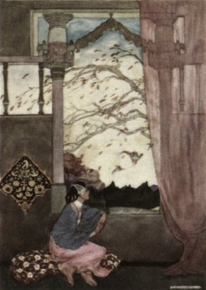

The Project Gutenberg EBook of Stray Birds, by Rabindranath Tagore This eBook is for the use of anyone anywhere at no cost and with almost no restrictions whatsoever. You may copy it, give it away or re-use it under the terms of the Project Gutenberg License included with this eBook or online at www.gutenberg.net Title: Stray Birds Author: Rabindranath Tagore Posting Date: March 27, 2010 [EBook #6524] Release Date: September, 2004 First Posted: December 25, 2002 Language: English Character set encoding: ISO-8859-1 *** START OF THIS PROJECT GUTENBERG EBOOK STRAY BIRDS *** Produced by Chetan K. Jain and Eric Eldred
Stray Birds
By Rabindranath Tagore
[translated from Bengali to English by the author]
New York: The Macmillan Company, 1916
[Frontispiece in color by Willy Pogány]
To
T. HARA
of
Yokohama1
STRAY birds of summer come to my window to sing and fly away.
And yellow leaves of autumn, which have no songs, flutter and fall there with a sigh.
2
O TROUPE of little vagrants of the world, leave your footprints in my words.
3
THE world puts off its mask of vastness to its lover.
It becomes small as one song, as one kiss of the eternal.
4
IT is the tears of the earth that keep her smiles in bloom.
5
THE mighty desert is burning for the love of a blade of grass who shakes her head and laughs and flies away.
6
IF you shed tears when you miss the sun, you also miss the stars.
7
THE sands in your way beg for your song and your movement, dancing water. Will you carry the burden of their lameness?
8
HER wistful face haunts my dreams like the rain at night.
9
ONCE we dreamt that we were strangers.
We wake up to find that we were dear to each other.
10
SORROW is hushed into peace in my heart like the evening among the silent trees.
11
SOME unseen fingers, like idle breeze, are playing upon my heart the music of the ripples.
12
"WHAT language is thine, O sea?"
"The language of eternal question."
"What language is thy answer, O sky?
"The language of eternal silence."
13
LISTEN, my heart, to the whispers of the world with which it makes love to you.
14
THE mystery of creation is like the darkness of night--it is great. Delusions of knowledge are like the fog of the morning.
15
DO not seat your love upon a precipice because it is high.
16
I SIT at my window this morning where the world like a passer-by stops for a moment, nods to me and goes.
17
THESE little thoughts are the rustle of leaves; they have their whisper of joy in my mind.
18
WHAT you are you do not see, what you see is your shadow.
19
MY wishes are fools, they shout across thy songs, my Master.
Let me but listen.
20
I CANNOT choose the best.
The best chooses me.
21
THEY throw their shadows before them who carry their lantern on their back.
22
THAT I exist is a perpetual surprise which is life.
23
"WE, the rustling leaves, have a voice that answers the storms, but who are you so silent?"
"I am a mere flower."
24
REST belongs to the work as the eyelids to the eyes.
25
MAN is a born child, his power is the power of growth.
26
GOD expects answers for the flowers he sends us, not for the sun and the earth.
27
THE light that plays, like a naked child, among the green leaves happily knows not that man can lie.
28
O BEAUTY, find thyself in love, not in the flattery of thy mirror.
29
MY heart beats her waves at the shore of the world and writes upon it her signature in tears with the words, "I love thee."
30
"MOON, for what do you wait?"
"To salute the sun for whom I must make way."
31
THE trees come up to my window like the yearning voice of the dumb earth.
32
HIS own mornings are new surprises to God.
33
LIFE finds its wealth by the claims of the world, and its worth by the claims of love.
34
THE dry river-bed finds no thanks for its past.
35
THE bird wishes it were a cloud. The cloud wishes it were a bird.
36
THE waterfall sings, "I find my song, when I find my freedom."
37
I CANNOT tell why this heart languishes in silence.
It is for small needs it never asks, or knows or remembers.
38
WOMAN, when you move about in your household service your limbs sing like a hill stream among its pebbles.
39
THE sun goes to cross the Western sea, leaving its last salutation to the East.
40
DO not blame your food because you have no appetite.
41
THE trees, like the longings of the earth, stand a-tiptoe to peep at the heaven.
42
YOU smiled and talked to me of nothing and I felt that for this I had been waiting long.
43
THE fish in the water is silent, the animal on the earth is noisy, the bird in the air is singing,
But Man has in him the silence of the sea, the noise of the earth and the music of the air.
44
THE world rushes on over the strings of the lingering heart making the music of sadness.
45
HE has made his weapons his gods. When his weapons win he is defeated himself.
46
GOD finds himself by creating.
47
SHADOW, with her veil drawn, follows Light in secret meekness, with her silent steps of love.
48
THE stars are not afraid to appear like fireflies.
49
I THANK thee that I am none of the wheels of power but I am one with the living creatures that are crushed by it.
50
THE mind, sharp but not broad, sticks at every point but does not move.
51
YOUR idol is shattered in the dust to prove that God's dust is greater than your idol.
52
MAN does not reveal himself in his history, he struggles up through it.
53
WHILE the glass lamp rebukes the earthen for calling it cousin, the moon rises, and the glass lamp, with a bland smile, calls her, "My dear, dear sister."
54
LIKE the meeting of the seagulls and the waves we meet and come near. The seagulls fly off, the waves roll away and we depart.
55
MY day is done, and I am like a boat drawn on the beach, listening to the dance-music of the tide in the evening.
56
LIFE is given to us, we earn it by giving it.
57
WE come nearest to the great when we are great in humility.
58
THE sparrow is sorry for the peacock at the burden of its tail.
59
NEVER be afraid of the moments--thus sings the voice of the everlasting.
60
THE hurricane seeks the shortest road by the no-road, and suddenly ends its search in the Nowhere.
61
TAKE my wine in my own cup, friend.
It loses its wreath of foam when poured into that of others.
62
THE Perfect decks itself in beauty for the love of the Imperfect.
63
GOD says to man, "I heal you therefore I hurt, love you therefore punish."
64
THANK the flame for its light, but do not forget the lampholder standing in the shade with constancy of patience.
65
TINY grass, your steps are small, but you possess the earth under your tread.
66
THE infant flower opens its bud and cries, "Dear World, please do not fade."
67
GOD grows weary of great kingdoms, but never of little flowers.
68
WRONG cannot afford defeat but Right can.
69
"I GIVE my whole water in joy," sings the waterfall, "though little of it is enough for the thirsty."
70
WHERE is the fountain that throws up these flowers in a ceaseless outbreak of ecstasy?
71
THE woodcutter's axe begged for its handle from the tree.
The tree gave it.
72
IN my solitude of heart I feel the sigh of this widowed evening veiled with mist and rain.
73
CHASTITY is a wealth that comes from abundance of love.
74
THE mist, like love, plays upon the heart of the hills and brings out surprises of beauty.
75
WE read the world wrong and say that it deceives us.
76
THE poet wind is out over the sea and the forest to seek his own voice.
77
EVERY child comes with the message that God is not yet discouraged of man.
78
THE grass seeks her crowd in the earth.
The tree seeks his solitude of the sky.
79
MAN barricades against himself.
80
YOUR voice, my friend, wanders in my heart, like the muffled sound of the sea among these listening pines.
81
WHAT is this unseen flame of darkness whose sparks are the stars?
82
LET life be beautiful like summer flowers and death like autumn leaves.
83
HE who wants to do good knocks at the gate; he who loves finds the gate open.
84
IN death the many becomes one; in life the one becomes many.
Religion will be one when God is dead.
85
THE artist is the lover of Nature, therefore he is her slave and her master.
86
"HOW far are you from me, O Fruit?"
"I am hidden in your heart, O Flower."
87
THIS longing is for the one who is felt in the dark, but not seen in the day.
88
"YOU are the big drop of dew under the lotus leaf, I am the smaller one on its upper side," said the dewdrop to the lake.
89
THE scabbard is content to be dull when it protects the keenness of the sword.
90
IN darkness the One appears as uniform; in the light the One appears as manifold.
91
THE great earth makes herself hospitable with the help of the grass.
92
THE birth and death of the leaves are the rapid whirls of the eddy whose wider circles move slowly among stars.
93
POWER said to the world, "You are mine.
The world kept it prisoner on her throne.
Love said to the world, "I am thine."
The world gave it the freedom of her house.
94
THE mist is like the earth's desire. It hides the sun for whom she cries.
95
BE still, my heart, these great trees are prayers.
96
THE noise of the moment scoffs at the music of the Eternal.
97
I THINK of other ages that floated upon the stream of life and love and death and are forgotten, and I feel the freedom of passing away.
98
THE sadness of my soul is her bride's veil.
It waits to be lifted in the night.
99
DEATH'S stamp gives value to the coin of life; making it possible to buy with life what is truly precious.
100
THE cloud stood humbly in a corner of the sky.
The morning crowned it with splendour.
101
THE dust receives insult and in return offers her flowers.
102
DO not linger to gather flowers to keep them, but walk on, for flowers will keep themselves blooming all your way.
103
ROOTS are the branches down in the earth.
Branches are roots in the air.
104
THE music of the far-away summer flutters around the Autumn seeking its former nest.
105
DO not insult your friend by lending him merits from your own pocket.
106
THE touch of the nameless days clings to my heart like mosses round the old tree.
107
THE echo mocks her origin to prove she is the original.
108
GOD is ashamed when the prosperous boasts of His special favour.
109
I CAST my own shadow upon my path, because I have a lamp that has not been lighted.
110
MAN goes into the noisy crowd to drown his own clamour of silence.
111
THAT which ends in exhaustion is death, but the perfect ending is in the endless.
112
THE sun has his simple robe of light. The clouds are decked with gorgeousness.
113
THE hills are like shouts of children who raise their arms, trying to catch stars.
114
THE road is lonely in its crowd for it is not loved.
115
THE power that boasts of its mischiefs is laughed at by the yellow leaves that fall, and clouds that pass by.
116
THE earth hums to me to-day in the sun, like a woman at her spinng, some ballad of the ancient time in a forgotten tongue.
117
THE grass-blade is worth of the great world where it grows.
118
DREAM is a wife who must talk.
Sleep is a husband who silently suffers.
119
THE night kisses the fading day whispering to his ear, "I am death, your mother. I am to give you fresh birth."
120
I FEEL, thy beauty, dark night, like that of the loved woman when she has put out the lamp.
121
I CARRY in my world that flourishes the worlds that have failed.
122
DEAR friend, I feel the silence of your great thoughts of may a deepening eventide on this beach when I listen to these waves.
123
THE bird thinks it is an act of kindness to give the fish a lift in the air.
124
"IN the moon thou sendest thy love letters to me," said the night to the sun.
"I leave my answers in tears upon the grass."
125
THE Great is a born child; when he dies he gives his great childhood to the world.
126
NOT hammerstrokes, but dance of the water sings the pebbles into perfection.
127
BEES sip honey from flowers and hum their thanks when they leave.
The gaudy butterfly is sure that the flowers owe thanks to him.
128
TO be outspoken is easy when you do not wait to speak the complete truth.
129
ASKS the Possible to the Impossible, "Where is your dwelling place?"
"In the dreams of the impotent," comes the answer.
130
IF you shut your door to all errors truth will be shut out.
131
I HEAR some rustle of things behind my sadness of heart,--I cannot see them.
132
LEISURE in its activity is work.
The stillness of the sea stirs in waves.
133
THE leaf becomes flower when it loves.
The flower becomes fruit when it worships.
134
THE roots below the earth claim no rewards for making the branches fruitful.
135
THIS rainy evening the wind is restless.
I look at the swaying branches and ponder over the greatness of all things.
136
STORM of midnight, like a giant child awakened in the untimely dark, has begun to play and shout.
137
THOU raisest thy waves vainly to follow thy lover. O sea, thou lonely bride of the storm.
138
"I AM ashamed of my emptiness," said the Word to the Work.
"I know how poor I am when I see you," said the Work to the Word.
139
TIME is the wealth of change, but the clock in its parody makes it mere change and no wealth.
140
TRUTH in her dress finds facts too tight.
In fiction she moves with ease.
141
WHEN I travelled to here and to there, I was tired of thee, O Road, but now when thou leadest me to everywhere I am wedded to thee in love.
142
LET me think that there is one among those stars that guides my life through the dark unknown.
143
WOMAN, with the grace of your fingers you touched my things and order came out like music.
144
ONE sad voice has its nest among the ruins of the years.
It sings to me in the night,--"I loved you."
145
THE flaming fire warns me off by its own glow.
Save me from the dying embers hidden under ashes.
146
I HAVE my stars in the sky,
But oh for my little lamp unlit in my house.
147
THE dust of the dead words clings to thee.
Wash thy soul with silence.
148
GAPS are left in life through which comes the sad music of death.
149
THE world has opened its heart of light in the morning.
Come out, my heart, with thy love to meet it.
150
MY thoughts shimmer with these shimmering leaves and my heart sings with the touch of this sunlight; my life is glad to be floating with all things into the blue of space, into the dark of time.
151
GOD'S great power is in the gentle breeze, not in the storm.
152
THIS is a dream in which things are all loose and they oppress. I shall find them gathered in thee when I awake and shall be free.
153
"WHO is there to take up my duties?" asked the setting sun.
"I shall do what I can, my Master," said the earthen lamp.
154
BY plucking her petals you do not gather the beauty of the flower.
155
SILENCE will carry your voice like the nest that holds the sleeping birds.
156
THE Great walks with the Small without fear.
The Middling keeps aloof.
157
THE night opens the flowers in secret and allows the day to get thanks.
158
POWER takes as ingratitude the writhings of its victims.
159
WHEN we rejoice in our fulness, then we can part with our fruits with joy.
160
THE raindrops kissed the earth and whispered,--"We are thy homesick children, mother, come back to thee from the heaven."
161
THE cobweb pretends to catch dew-drops and catches flies.
162
LOVE! when you come with the burning lamp of pain in your hand, I can see your face and know you as bliss.
163
"THE learned say that your lights will one day be no more." said the firefly to the stars.
The stars made no answer.
164
IN the dusk of the evening the bird of some early dawn comes to the nest of my silence.
165
THOUGHTS pass in my mind like flocks of ducks in the sky.
I hear the voice of their wings.
166
THE canal loves to think that rivers exist solely to supply it with water.
167
THE world has kissed my soul with its pain, asking for its return in songs.
168
THAT which oppresses me, is it my soul trying to come out in the open, or the soul of the world knocking at my heart for its entrance?
169
THOUGHT feeds itself with its own words and grows.
170
I HAVE dipped the vessel of my heart into this silent hour; it has filled with love.
171
EITHER you have work or you have not.
When you have to say, "Let us do something," then begins mischief.
172
THE sunflower blushed to own the nameless flower as her kin.
The sun rose and smiled on it, saying, "Are you well, my darling?"
173
"WHO drives me forward like fate?"
"The Myself striding on my back."
174
THE clouds fill the watercups of the river, hiding themselves in the distant hills.
175
I SPILL water from my water jar as I walk on my way,
Very little remains for my home.
176
THE water in a vessel is sparkling; the water in the sea is dark.
The small truth has words that are clear; the great truth has great silence.
177
YOUR smile was the flowers of your own fields, your talk was the rustle of your own mountain pines, but your heart was the woman that we all know.
178
IT is the little things that I leave behind for my loved ones,--great things are for everyone.
179
WOMAN, thou hast encircled the world's heart with the depth of thy tears as the sea has the earth.
180
THE sunshine greets me with a smile. The rain, his sad sister, talks to my heart.
181
MY flower of the day dropped its petals forgotten.
In the evening it ripens into a golden fruit of memory.
182
I AM like the road in the night listening to the footfalls of its memories in silence.
183
THE evening sky to me is like a window, and a lighted lamp, and a waiting behind it.
184
HE who is too busy doing good finds no time to be good.
185
I AM the autumn cloud, empty of rain, see my fulness in the field of ripened rice.
186
THEY hated and killed and men praised them.
But God in shame hastens to hide its memory under the green grass.
187
TOES are the fingers that have forsaken their past.
188
DARKNESS travels towards light, but blindness towards death.
189
THE pet dog suspects the universe for scheming to take its place.
190
SIT still my heart, do not raise your dust.
Let the world find its way to you.
191
THE bow whispers to the arrow before it speeds forth--"Your freedom is mine."
192
WOMAN, in your laughter you have the music of the fountain of life.
193
A MIND all logic is like a knife all blade.
It makes the hand bleed that uses it.
194
GOD loves man's lamp lights better than his own great stars.
195
THIS world is the world of wild storms kept tame with the music of beauty.
196
"MY heart is like the golden casket of thy kiss," said the sunset cloud to the sun.
197
BY touching you may kill, by keeping away you may possess.
198
THE cricket's chirp and the patter of rain come to me through the dark, like the rustle of dreams from my past youth.
199
"I HAVE lost my dewdrop," cries the flower to the morning sky that has lost all its stars.
200
THE burning log bursts in flame and cries,--"This is my flower, my death."
201
THE wasp thinks that the honey-hive of the neighbouring bees is too small.
His neighbours ask him to build one still smaller.
202
"I CANNOT keep your waves," says the bank to the river.
"Let me keep your footprints in my heart."
203
THE day, with the noise of this little earth, drowns the silence of all worlds.
204
THE song feels the infinite in the air, the picture in the earth, the poem in the air and the earth;
For its words have meaning that walks and music that soars.
205
WHEN the sun goes down to the West, the East of his morning stands before him in silence.
206
LET me not put myself wrongly to my world and set it against me.
207
PRAISE shames me, for I secretly beg for it.
208
LET my doing nothing when I have nothing to do become untroubled in its depth of peace like the evening in the seashore when the water is silent.
209
MAIDEN, your simplicity, like the blueness of the lake, reveals your depth of truth.
210
THE best does not come alone. It comes with the company of the all.
211
GOD's right hand is gentle, but terrible is his left hand.
212
MY evening came among the alien trees and spoke in a language which my morning stars did not know.
213
NIGHT'S darkness is a bag that bursts with the gold of the dawn.
214
OUR desire lends the colours of the rainbow to the mere mists and vapours of life.
215
GOD waits to win back his own flowers as gifts from man's hands.
216
MY sad thoughts tease me asking me their own names.
217
THE service of the fruit is precious, the service of the flower is sweet, but let my service be the service of the leaves in its shade of humble devotion.
218
MY heart has spread its sails to the idle winds for the shadowy island of Anywhere.
219
MEN are cruel, but Man is kind.
220
MAKE me thy cup and let my fulness be for thee and for thine.
221
THE storm is like the cry of some god in pain whose love the earth refuses.
222
THE world does not leak because death is not a crack.
223
LIFE has become richer by the love that has been lost.
224
MY friend, your great heart shone with the sunrise of the East like the snowy summit of a lonely hill in the dawn.
225
THE fountain of death makes the still water of life play.
226
THOSE who have everything but thee, my God, laugh at those who have nothing but thyself.
227
THE movement of life has its rest in its own music.
228
KICKS only raise dust and not crops from the earth.
229
OUR names are the light that glows on the sea waves at night and then dies without leaving its signature.
230
LET him only see the thorns who has eyes to see the rose.
231
SET bird's wings with gold and it will never again soar in the sky.
232
THE same lotus of our clime blooms here in the alien water with the same sweetness, under another name.
233
IN heart's perspective the distance looms large.
234
THE moon has her light all over the sky, her dark spots to herself.
235
DO not say, "It is morning," and dismiss it with a name of yesterday. See it for the first time as a new-born child that has no name.
236
SMOKE boasts to the sky, and Ashes to the earth, that they are brothers to the fire.
237
THE raindrop whispered to the jasmine, "Keep me in your heart for ever."
The jasmine sighed, "Alas," and dropped to the ground.
238
TIMID thoughts, do not be afraid of me.
I am a poet.
239
THE dim silence of my mind seems filled with crickets' chirp--the grey twilight of sound.
240
ROCKETS, your insult to the stars follows yourself back to the earth.
241
THOU hast led me through my crowded travels of the day to my evening's loneliness.
I wait for its meaning through the stillness of the night.
242
THIS life is the crossing of a sea, where we meet in the same narrow ship.
In death we reach the shore and go to our different worlds.
243
THE stream of truth flows through its channels of mistakes.
244
MY heart is homesick to-day for the one sweet hour across the sea of time.
245
THE bird-song is the echo of the morning light back from the earth.
246
"ARE you too proud to kiss me?" the morning light asks the buttercup.
247
"HOW may I sing to thee and worship, O Sun?" asked the little flower.
"By the simple silence of thy purity," answered the sun.
248
MAN is worse than an animal when he is an animal.
249
DARK clouds become heaven's flowers when kissed by light.
250
LET not the sword-blade mock its handle for being blunt.
251
THE night's silence, like a deep lamp, is burning with the light of its milky way.
252
AROUND the sunny island of Life swells day and night death's limitless song of the sea.
253
IS not this mountain like a flower, with its petals of hills, drinking the sunlight?
254
THE real with its meaning read wrong and emphasis misplaced is the unreal.
255
FIND your beauty, my heart, from the world's movement, like the boat that has the grace of the wind and the water.
256
THE eyes are not proud of their sight but of their eyeglasses.
257
I LIVE in this little world of mine and am afraid to make it the least less. Lift me into thy world and let me have the freedom gladly to lose my all.
258
THE false can never grow into truth by growing in power.
259
MY heart, with its lapping waves of song, longs to caress this green world of the sunny day.
260
WAYSIDE grass, love the star, then your dreams will come out in flowers.
261
LET your music, like a sword, pierce the noise of the market to its heart.
262
THE trembling leaves of this tree touch my heart like the fingers of an infant child.
263
THIS sadness of my soul is her bride's veil.
It waits to be lifted in the night.
264
THE little flower lies in the dust.
It sought the path of the butterfly.
265
I AM in the world of the roads. The night comes. Open thy gate, thou world of the home.
266
I HAVE sung the songs of thy day. In the evening let me carry thy lamp through the stormy path.
267
I DO not ask thee into the house.
Come into my infinite loneliness, my Lover.
268
DEATH belongs to life as birth does. The walk is in the raising of the foot as in the laying of it down.
269
I HAVE learnt the simple meaning of thy whispers in flowers and sunshine--teach me to know thy words in pain and death.
270
THE night's flower was late when the morning kissed her, she shivered and sighed and dropped to the ground.
271
THROUGH the sadness of all things I hear the crooning of the Eternal Mother.
272
I CAME to your shore as a stranger, I lived in your house as a guest, I leave your door as a friend, my earth.
273
LET my thoughts come to you, when I am gone, like the afterglow of sunset at the margin of starry silence.
274
LIGHT in my heart the evening star of rest and then let the night whisper to me of love.
275
I AM a child in the dark.
I stretch my hands through the coverlet of night for thee, Mother.
276
THE day of work is done. Hide my face in your arms, Mother.
Let me dream.
277
THE lamp of meeting burns long; it goes out in a moment at the parting.
278
ONE word keep for me in thy silence, O World, when I am dead, "I have loved."
279
WE live in this world when we love it.
280
LET the dead have the immortality of fame, but the living the immortality of love.
281
I HAVE seen thee as the half-awakened child sees his mother in the dusk of the dawn and then smiles and sleeps again.
282
I SHALL die again and again to know that life is inexhaustible.
283
WHILE I was passing with the crowd in the road I saw thy smile from the balcony and I sang and forgot all noise.
284
LOVE is life in its fulness like the cup with its wine.
285
THEY light their own lamps and sing their own words in their temples.
But the birds sing thy name in thine own morning light,--for thy name is joy.
286
LEAD me in the centre of thy silence to fill my heart with songs.
287
LET them live who choose in their own hissing world of fireworks.
My heart longs for thy stars, my God.
288
LOVE'S pain sang round my life like the unplumbed sea, and love's joy sang like birds in its flowering groves.
289
PUT out the lamp when thou wishest.
I shall know thy darkness and shall love it.
290
WHEN I stand before thee at the day's end thou shalt see my scars and know that I had my wounds and also my healing.
291
SOME day I shall sing to thee in the sunrise of some other world, "I have seen thee before in the light of the earth, in the love of man."
292
CLOUDS come floating into my life from other days no longer to shed rain or usher storm but to give colour to my sunset sky.
293
TRUTH raises against itself the storm that scatters its seeds broadcast.
294
THE storm of the last night has crowned this morning with golden peace.
295
TRUTH seems to come with its final word; and the final word gives birth to its next.
296
BLESSED is he whose fame does not outshine his truth.
297
SWEETNESS of thy name fills my heart when I forget mine--like thy morning sun when the mist is melted.
298
THE silent night has the beauty of the mother and the clamorous day of the child.
299
THE world loved man when he smiled. The world became afraid of him when he laughed.
300
GOD waits for man to regain his childhood in wisdom.
301
LET me feel this world as thy love taking form, then my love will help it.
302
THY sunshine smiles upon the winter days of my heart, never doubting of its spring flowers.
303
GOD kisses the finite in his love and man the infinite.
304
THOU crossest desert lands of barren years to reach the moment of fulfilment.
305
GOD's silence ripens man's thoughts into speech.
306
THOU wilt find, Eternal Traveller, marks of thy footsteps across my songs.
307
LET me not shame thee, Father, who displayest thy glory in thy children.
308
CHEERLESS is the day, the light under frowning clouds is like a punished child with traces of tears on its pale cheeks, and the cry of the wind is like the cry of a wounded world. But I know I am travelling to meet my Friend.
309
TO-NIGHT there is a stir among the palm leaves, a swell in the sea, Full Moon, like the heart throb of the world. From what unknown sky hast thou carried in thy silence the aching secret of love?
310
I DREAM of a star, an island of light, where I shall be born and in the depth of its quickening leisure my life will ripen its works like the ricefield in the autumn sun.
311
THE smell of the wet earth in the rain rises like a great chant of praise from the voiceless multitude of the insignificant.
312
THAT love can ever lose is a fact that we cannot accept as truth.
313
WE shall know some day that death can never rob us of that which our soul has gained, for her gains are one with herself.
314
GOD comes to me in the dusk of my evening with the flowers from my past kept fresh in his basket.
315
WHEN all the strings of my life will be tuned, my Master, then at every touch of thine will come out the music of love.
316
LET me live truly, my Lord, so that death to me become true.
317
MAN'S history is waiting in patience for the triumph of the insulted man.
318
I FEEL thy gaze upon my heart this moment like the sunny silence of the morning upon the lonely field whose harvest is over.
319
I LONG for the Island of Songs across this heaving Sea of Shouts.
320
THE prelude of the night is commenced in the music of the sunset, in its solemn hymn to the ineffable dark.
321
I HAVE scaled the peak and found no shelter in fame's bleak and barren height. Lead me, my Guide, before the light fades, into the valley of quiet where life's harvest mellows into golden wisdom.
322
THINGS look phantastic in this dimness of the dusk--the spires whose bases are lost in the dark and tree tops like blots of ink. I shall wait for the morning and wake up to see thy city in the light.
323
I HAVE suffered and despaired and known death and I am glad that I am in this great world.
324
THERE are tracts in my life that are bare and silent. They are the open spaces where my busy days had their light and air.
325
RELEASE me from my unfulfilled past clinging to me from behind making death difficult.
326
LET this be my last word, that I trust in thy love.
End of the Project Gutenberg EBook of Stray Birds, by Rabindranath Tagore
*** END OF THIS PROJECT GUTENBERG EBOOK STRAY BIRDS ***
***** This file should be named 6524-h.htm or 6524-h.zip *****
This and all associated files of various formats will be found in:
http://www.gutenberg.org/6/5/2/6524/
Produced by Chetan K. Jain and Eric Eldred
Updated editions will replace the previous one--the old editions
will be renamed.
Creating the works from public domain print editions means that no
one owns a United States copyright in these works, so the Foundation
(and you!) can copy and distribute it in the United States without
permission and without paying copyright royalties. Special rules,
set forth in the General Terms of Use part of this license, apply to
copying and distributing Project Gutenberg-tm electronic works to
protect the PROJECT GUTENBERG-tm concept and trademark. Project
Gutenberg is a registered trademark, and may not be used if you
charge for the eBooks, unless you receive specific permission. If you
do not charge anything for copies of this eBook, complying with the
rules is very easy. You may use this eBook for nearly any purpose
such as creation of derivative works, reports, performances and
research. They may be modified and printed and given away--you may do
practically ANYTHING with public domain eBooks. Redistribution is
subject to the trademark license, especially commercial
redistribution.
*** START: FULL LICENSE ***
THE FULL PROJECT GUTENBERG LICENSE
PLEASE READ THIS BEFORE YOU DISTRIBUTE OR USE THIS WORK
To protect the Project Gutenberg-tm mission of promoting the free
distribution of electronic works, by using or distributing this work
(or any other work associated in any way with the phrase "Project
Gutenberg"), you agree to comply with all the terms of the Full Project
Gutenberg-tm License (available with this file or online at
http://gutenberg.net/license).
Section 1. General Terms of Use and Redistributing Project Gutenberg-tm
electronic works
1.A. By reading or using any part of this Project Gutenberg-tm
electronic work, you indicate that you have read, understand, agree to
and accept all the terms of this license and intellectual property
(trademark/copyright) agreement. If you do not agree to abide by all
the terms of this agreement, you must cease using and return or destroy
all copies of Project Gutenberg-tm electronic works in your possession.
If you paid a fee for obtaining a copy of or access to a Project
Gutenberg-tm electronic work and you do not agree to be bound by the
terms of this agreement, you may obtain a refund from the person or
entity to whom you paid the fee as set forth in paragraph 1.E.8.
1.B. "Project Gutenberg" is a registered trademark. It may only be
used on or associated in any way with an electronic work by people who
agree to be bound by the terms of this agreement. There are a few
things that you can do with most Project Gutenberg-tm electronic works
even without complying with the full terms of this agreement. See
paragraph 1.C below. There are a lot of things you can do with Project
Gutenberg-tm electronic works if you follow the terms of this agreement
and help preserve free future access to Project Gutenberg-tm electronic
works. See paragraph 1.E below.
1.C. The Project Gutenberg Literary Archive Foundation ("the Foundation"
or PGLAF), owns a compilation copyright in the collection of Project
Gutenberg-tm electronic works. Nearly all the individual works in the
collection are in the public domain in the United States. If an
individual work is in the public domain in the United States and you are
located in the United States, we do not claim a right to prevent you from
copying, distributing, performing, displaying or creating derivative
works based on the work as long as all references to Project Gutenberg
are removed. Of course, we hope that you will support the Project
Gutenberg-tm mission of promoting free access to electronic works by
freely sharing Project Gutenberg-tm works in compliance with the terms of
this agreement for keeping the Project Gutenberg-tm name associated with
the work. You can easily comply with the terms of this agreement by
keeping this work in the same format with its attached full Project
Gutenberg-tm License when you share it without charge with others.
1.D. The copyright laws of the place where you are located also govern
what you can do with this work. Copyright laws in most countries are in
a constant state of change. If you are outside the United States, check
the laws of your country in addition to the terms of this agreement
before downloading, copying, displaying, performing, distributing or
creating derivative works based on this work or any other Project
Gutenberg-tm work. The Foundation makes no representations concerning
the copyright status of any work in any country outside the United
States.
1.E. Unless you have removed all references to Project Gutenberg:
1.E.1. The following sentence, with active links to, or other immediate
access to, the full Project Gutenberg-tm License must appear prominently
whenever any copy of a Project Gutenberg-tm work (any work on which the
phrase "Project Gutenberg" appears, or with which the phrase "Project
Gutenberg" is associated) is accessed, displayed, performed, viewed,
copied or distributed:
This eBook is for the use of anyone anywhere at no cost and with
almost no restrictions whatsoever. You may copy it, give it away or
re-use it under the terms of the Project Gutenberg License included
with this eBook or online at www.gutenberg.net
1.E.2. If an individual Project Gutenberg-tm electronic work is derived
from the public domain (does not contain a notice indicating that it is
posted with permission of the copyright holder), the work can be copied
and distributed to anyone in the United States without paying any fees
or charges. If you are redistributing or providing access to a work
with the phrase "Project Gutenberg" associated with or appearing on the
work, you must comply either with the requirements of paragraphs 1.E.1
through 1.E.7 or obtain permission for the use of the work and the
Project Gutenberg-tm trademark as set forth in paragraphs 1.E.8 or
1.E.9.
1.E.3. If an individual Project Gutenberg-tm electronic work is posted
with the permission of the copyright holder, your use and distribution
must comply with both paragraphs 1.E.1 through 1.E.7 and any additional
terms imposed by the copyright holder. Additional terms will be linked
to the Project Gutenberg-tm License for all works posted with the
permission of the copyright holder found at the beginning of this work.
1.E.4. Do not unlink or detach or remove the full Project Gutenberg-tm
License terms from this work, or any files containing a part of this
work or any other work associated with Project Gutenberg-tm.
1.E.5. Do not copy, display, perform, distribute or redistribute this
electronic work, or any part of this electronic work, without
prominently displaying the sentence set forth in paragraph 1.E.1 with
active links or immediate access to the full terms of the Project
Gutenberg-tm License.
1.E.6. You may convert to and distribute this work in any binary,
compressed, marked up, nonproprietary or proprietary form, including any
word processing or hypertext form. However, if you provide access to or
distribute copies of a Project Gutenberg-tm work in a format other than
"Plain Vanilla ASCII" or other format used in the official version
posted on the official Project Gutenberg-tm web site (www.gutenberg.net),
you must, at no additional cost, fee or expense to the user, provide a
copy, a means of exporting a copy, or a means of obtaining a copy upon
request, of the work in its original "Plain Vanilla ASCII" or other
form. Any alternate format must include the full Project Gutenberg-tm
License as specified in paragraph 1.E.1.
1.E.7. Do not charge a fee for access to, viewing, displaying,
performing, copying or distributing any Project Gutenberg-tm works
unless you comply with paragraph 1.E.8 or 1.E.9.
1.E.8. You may charge a reasonable fee for copies of or providing
access to or distributing Project Gutenberg-tm electronic works provided
that
- You pay a royalty fee of 20% of the gross profits you derive from
the use of Project Gutenberg-tm works calculated using the method
you already use to calculate your applicable taxes. The fee is
owed to the owner of the Project Gutenberg-tm trademark, but he
has agreed to donate royalties under this paragraph to the
Project Gutenberg Literary Archive Foundation. Royalty payments
must be paid within 60 days following each date on which you
prepare (or are legally required to prepare) your periodic tax
returns. Royalty payments should be clearly marked as such and
sent to the Project Gutenberg Literary Archive Foundation at the
address specified in Section 4, "Information about donations to
the Project Gutenberg Literary Archive Foundation."
- You provide a full refund of any money paid by a user who notifies
you in writing (or by e-mail) within 30 days of receipt that s/he
does not agree to the terms of the full Project Gutenberg-tm
License. You must require such a user to return or
destroy all copies of the works possessed in a physical medium
and discontinue all use of and all access to other copies of
Project Gutenberg-tm works.
- You provide, in accordance with paragraph 1.F.3, a full refund of any
money paid for a work or a replacement copy, if a defect in the
electronic work is discovered and reported to you within 90 days
of receipt of the work.
- You comply with all other terms of this agreement for free
distribution of Project Gutenberg-tm works.
1.E.9. If you wish to charge a fee or distribute a Project Gutenberg-tm
electronic work or group of works on different terms than are set
forth in this agreement, you must obtain permission in writing from
both the Project Gutenberg Literary Archive Foundation and Michael
Hart, the owner of the Project Gutenberg-tm trademark. Contact the
Foundation as set forth in Section 3 below.
1.F.
1.F.1. Project Gutenberg volunteers and employees expend considerable
effort to identify, do copyright research on, transcribe and proofread
public domain works in creating the Project Gutenberg-tm
collection. Despite these efforts, Project Gutenberg-tm electronic
works, and the medium on which they may be stored, may contain
"Defects," such as, but not limited to, incomplete, inaccurate or
corrupt data, transcription errors, a copyright or other intellectual
property infringement, a defective or damaged disk or other medium, a
computer virus, or computer codes that damage or cannot be read by
your equipment.
1.F.2. LIMITED WARRANTY, DISCLAIMER OF DAMAGES - Except for the "Right
of Replacement or Refund" described in paragraph 1.F.3, the Project
Gutenberg Literary Archive Foundation, the owner of the Project
Gutenberg-tm trademark, and any other party distributing a Project
Gutenberg-tm electronic work under this agreement, disclaim all
liability to you for damages, costs and expenses, including legal
fees. YOU AGREE THAT YOU HAVE NO REMEDIES FOR NEGLIGENCE, STRICT
LIABILITY, BREACH OF WARRANTY OR BREACH OF CONTRACT EXCEPT THOSE
PROVIDED IN PARAGRAPH F3. YOU AGREE THAT THE FOUNDATION, THE
TRADEMARK OWNER, AND ANY DISTRIBUTOR UNDER THIS AGREEMENT WILL NOT BE
LIABLE TO YOU FOR ACTUAL, DIRECT, INDIRECT, CONSEQUENTIAL, PUNITIVE OR
INCIDENTAL DAMAGES EVEN IF YOU GIVE NOTICE OF THE POSSIBILITY OF SUCH
DAMAGE.
1.F.3. LIMITED RIGHT OF REPLACEMENT OR REFUND - If you discover a
defect in this electronic work within 90 days of receiving it, you can
receive a refund of the money (if any) you paid for it by sending a
written explanation to the person you received the work from. If you
received the work on a physical medium, you must return the medium with
your written explanation. The person or entity that provided you with
the defective work may elect to provide a replacement copy in lieu of a
refund. If you received the work electronically, the person or entity
providing it to you may choose to give you a second opportunity to
receive the work electronically in lieu of a refund. If the second copy
is also defective, you may demand a refund in writing without further
opportunities to fix the problem.
1.F.4. Except for the limited right of replacement or refund set forth
in paragraph 1.F.3, this work is provided to you 'AS-IS' WITH NO OTHER
WARRANTIES OF ANY KIND, EXPRESS OR IMPLIED, INCLUDING BUT NOT LIMITED TO
WARRANTIES OF MERCHANTIBILITY OR FITNESS FOR ANY PURPOSE.
1.F.5. Some states do not allow disclaimers of certain implied
warranties or the exclusion or limitation of certain types of damages.
If any disclaimer or limitation set forth in this agreement violates the
law of the state applicable to this agreement, the agreement shall be
interpreted to make the maximum disclaimer or limitation permitted by
the applicable state law. The invalidity or unenforceability of any
provision of this agreement shall not void the remaining provisions.
1.F.6. INDEMNITY - You agree to indemnify and hold the Foundation, the
trademark owner, any agent or employee of the Foundation, anyone
providing copies of Project Gutenberg-tm electronic works in accordance
with this agreement, and any volunteers associated with the production,
promotion and distribution of Project Gutenberg-tm electronic works,
harmless from all liability, costs and expenses, including legal fees,
that arise directly or indirectly from any of the following which you do
or cause to occur: (a) distribution of this or any Project Gutenberg-tm
work, (b) alteration, modification, or additions or deletions to any
Project Gutenberg-tm work, and (c) any Defect you cause.
Section 2. Information about the Mission of Project Gutenberg-tm
Project Gutenberg-tm is synonymous with the free distribution of
electronic works in formats readable by the widest variety of computers
including obsolete, old, middle-aged and new computers. It exists
because of the efforts of hundreds of volunteers and donations from
people in all walks of life.
Volunteers and financial support to provide volunteers with the
assistance they need are critical to reaching Project Gutenberg-tm's
goals and ensuring that the Project Gutenberg-tm collection will
remain freely available for generations to come. In 2001, the Project
Gutenberg Literary Archive Foundation was created to provide a secure
and permanent future for Project Gutenberg-tm and future generations.
To learn more about the Project Gutenberg Literary Archive Foundation
and how your efforts and donations can help, see Sections 3 and 4
and the Foundation web page at http://www.pglaf.org.
Section 3. Information about the Project Gutenberg Literary Archive
Foundation
The Project Gutenberg Literary Archive Foundation is a non profit
501(c)(3) educational corporation organized under the laws of the
state of Mississippi and granted tax exempt status by the Internal
Revenue Service. The Foundation's EIN or federal tax identification
number is 64-6221541. Its 501(c)(3) letter is posted at
http://pglaf.org/fundraising. Contributions to the Project Gutenberg
Literary Archive Foundation are tax deductible to the full extent
permitted by U.S. federal laws and your state's laws.
The Foundation's principal office is located at 4557 Melan Dr. S.
Fairbanks, AK, 99712., but its volunteers and employees are scattered
throughout numerous locations. Its business office is located at
809 North 1500 West, Salt Lake City, UT 84116, (801) 596-1887, email
business@pglaf.org. Email contact links and up to date contact
information can be found at the Foundation's web site and official
page at http://pglaf.org
For additional contact information:
Dr. Gregory B. Newby
Chief Executive and Director
gbnewby@pglaf.org
Section 4. Information about Donations to the Project Gutenberg
Literary Archive Foundation
Project Gutenberg-tm depends upon and cannot survive without wide
spread public support and donations to carry out its mission of
increasing the number of public domain and licensed works that can be
freely distributed in machine readable form accessible by the widest
array of equipment including outdated equipment. Many small donations
($1 to $5,000) are particularly important to maintaining tax exempt
status with the IRS.
The Foundation is committed to complying with the laws regulating
charities and charitable donations in all 50 states of the United
States. Compliance requirements are not uniform and it takes a
considerable effort, much paperwork and many fees to meet and keep up
with these requirements. We do not solicit donations in locations
where we have not received written confirmation of compliance. To
SEND DONATIONS or determine the status of compliance for any
particular state visit http://pglaf.org
While we cannot and do not solicit contributions from states where we
have not met the solicitation requirements, we know of no prohibition
against accepting unsolicited donations from donors in such states who
approach us with offers to donate.
International donations are gratefully accepted, but we cannot make
any statements concerning tax treatment of donations received from
outside the United States. U.S. laws alone swamp our small staff.
Please check the Project Gutenberg Web pages for current donation
methods and addresses. Donations are accepted in a number of other
ways including including checks, online payments and credit card
donations. To donate, please visit: http://pglaf.org/donate
Section 5. General Information About Project Gutenberg-tm electronic
works.
Professor Michael S. Hart is the originator of the Project Gutenberg-tm
concept of a library of electronic works that could be freely shared
with anyone. For thirty years, he produced and distributed Project
Gutenberg-tm eBooks with only a loose network of volunteer support.
Project Gutenberg-tm eBooks are often created from several printed
editions, all of which are confirmed as Public Domain in the U.S.
unless a copyright notice is included. Thus, we do not necessarily
keep eBooks in compliance with any particular paper edition.
Most people start at our Web site which has the main PG search facility:
http://www.gutenberg.net
This Web site includes information about Project Gutenberg-tm,
including how to make donations to the Project Gutenberg Literary
Archive Foundation, how to help produce our new eBooks, and how to
subscribe to our email newsletter to hear about new eBooks.